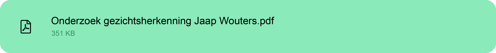
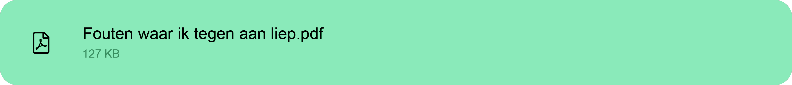

Sprint X


Sprint X is het laatste project van semester 2. Voor dit project heb je vrije keuze in wat je gaat doen. Ik wilde voor mijn sprint x mijn development wat meer aansterken. Daarom koos ik voor een javascript POC in het genre van gezichtsdetectie/gezichtsherkenning. Natuurlijk moet je je ideen eerst overleggen met een docent. Als mijn begeleider voor dit project koos ik Berry.
Zoals ik eerder al zei wilde ik iets gaan maken omtrent development, ik heb op het internet gezocht naar javascript POC's waarbij gezichtsherkenning of detectie van toepassing komt. Zo kwam ik langs een POC over gezichtsherkenning, eentje over gezichtsdetectie en een waarbij er handgebaren werden gedetecteerd. Ik wilde een van deze ideeën gaan maken voor mijn sprint x. Naast een javascript POC heb ik er ook nog een onderzoek naast gedaan over gezichtsherkenning. Dit onderzoek gaat over hoe veilig gezichtsherkenning nou daadwerkelijk is.
Mijn eigen doel voor deze sprint was om meer te leren over javascript, met mijn opdracht over gezichtsdetectie wilde ik dit gaan leren. Daarnaast vind ik de technologie van gezichtsherkenning erg interessant. Dus leek het mij een goed plan om hier het onderzoek over te doen. Zo dat dit bijpassend was bij mijn javascript POC.
Mijn onderzoek gaat over gezichtsherkenning en hoe veilig het nou echt is. Ik heb een hoofdvraag en daar 4 deelvragen bij bedacht. Mijn hoofdvraag was: Hoe veilig is gezichtsherkenning?
En mijn deelvragen waren:
o Is gezichtsherkenning de toekomst?
o Is gezichtsherkenning veilger dan andere inlog methodes?
o Is gezichtsherkenning makkelijk te vervalsen?
o Wat is de wetgeving voor gezichtsherkenning?
Ik heb elke deelvraag uitgewerkt tot een hoofdstuk. Naast al mijn deelvragen heb ik aan het einde een conclusie gemaakt over de hoofdvraag en het gehele onderzoek.
Daarin beantwoord ik de hoofdvraag en haal ik elke deelvraag kort nog even naar voren. Uit mijn onderzoek bleek dat gezichtsherkenning niet helemaal waterdicht bleek te zijn. Zo zijn er een hoop manieren
om deze technologie te manipuleren. Voor mijn gehele conlusie kun je het onderzoek hieronder bekijken.
Klik op de knop hieronder om mijn onderzoek te bekijken.

Voor mijn 2e deel van sprint x ben ik aan de gang gegaan met gezichtsdetectie, om dit te realiseren heb ik de face-api en javascript gebruikt.
Op het moment dat je met je gezicht voor de camera zit, wordt je gezichts getracked/gevolgd. Door middel van verschillende functies die in de face-api zitten
is het mogelijk om ook emotie te zien en kan de applicatie zien waar je mond, ogen en neus zich bevinden.
In dit stukje code hiernaast zie je het belangrijkste gedeelte van de javascript code. Dit stukje code zorgt voor het volgen van je gezicht en het aantonen
van emoties en gezichtspunten.
Klik hier om een prototype te zien.
Tijdens de weken van sprint x heb in een korte tijd wat meer geleerd over javascript en api's. Daarnaast ben ik met mijn onderzoek een hoop meer te weten gekomen over
gezichtsherkenning de regels daar van en wat het inhoud voor de toekomst. Mijn POC verliep niet klakkeloos, zo zijn er een paar dingen waar ik tegen aan liep. Zo ben ik er bijvoorbeeld
achter gekomen dat het prototype niet inlaad op de site, maar lokaal wel. Dit gebeurd omdat POC blijkbaar heel fragiel is met waar het staat opgeslagen en hoe het geopend word. Een echte verklaring heb ik
er niet voor. Zie het gifje boven aan de pagina voor een voorbeeld.
De verdere fouten die ik tegen kwam zie je in het PDF-bestand hieronder.

Wat ik de volgende keer anders wil gaan doen is eerder dingen plannen. Ik ben in week 2 pas echt begonnnen met sprint x, dit kwam omdat ik het ook erg druk had met mijn portfolio. Bijhorend het eerder plannen wil ik meer feedback vragen, de reden dat ik pas wat later deed is omdat ik mijn sprint x eerst volledig af wilde hebben.
"Jammer dat het prototype niet werkt. Probeer ajb zo volledig mogelijk te zijn in het presenteren van uitgangspunt
(“Dit onderzoek gaat over hoe veilig gezichtsherkenning nou daadwerkelijk is”….hoe veilig is het?) en resultaten, tegen welke technische zaken liep je aan waardoor
je het prototype niet aan de praat kreeg. Proces staat verder netjes gepresenteerd in je portfolio, vul ajb aan met een relevante reflectie en eindconclusie. succes!"
~ Berry Sanders